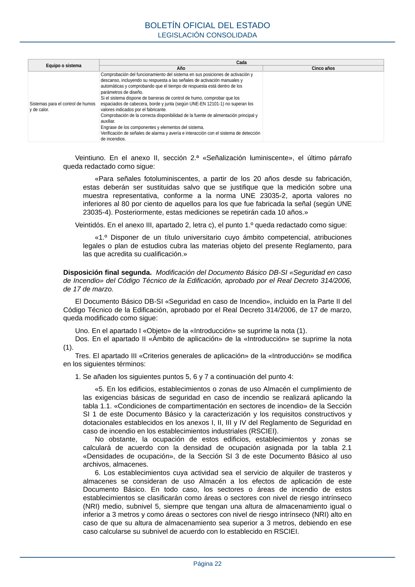

RSCIEI · edición 2025-04-10 · capa asociada
Documento RSCIEI-asociada · SHA-256 del PDF 85aa0af25d51e5b58d8975a4eefbf76d3f57a8933445cfe814ae9c4818a2e3e7
Copia fiel del PDF fuente · Fuente oficial
Ficha de la disposición en la fuente oficial
Texto extraído y reorganizado: Basado en datos de la Agencia Estatal Boletín Oficial del Estado. PDF reproducido: Fuente de los datos: Agencia Estatal Boletín Oficial del Estado.
Formatos: JSON del segmento · Markdown
Disposición final segunda. Modificación del Documento Básico DB-SI «Seguridad en caso de Incendio» del Código Técnico de la Edificación, aprobado por el Real Decreto 314/2006, de 17 de marzo. El Documento Básico DB-SI «Seguridad en caso de Incendio», incluido en la Parte II del Código Técnico de la Edificación, aprobado por el Real Decreto 314/2006, de 17 de marzo, queda modificado como sigue: Uno. En el apartado I «Objeto» de la «Introducción» se suprime la nota (1). Dos. En el apartado II «Ámbito de aplicación» de la «Introducción» se suprime la nota (1). Tres. El apartado III «Criterios generales de aplicación» de la «Introducción» se modifica en los siguientes términos: 1. Se añaden los siguientes puntos 5, 6 y 7 a continuación del punto 4: «5. En los edificios, establecimientos o zonas de uso Almacén el cumplimiento de las exigencias básicas de seguridad en caso de incendio se realizará aplicando la tabla 1.1. «Condiciones de compartimentación en sectores de incendio» de la Sección SI 1 de este Documento Básico y la caracterización y los requisitos constructivos y dotacionales establecidos en los anexos I, II, III y IV del Reglamento de Seguridad en caso de incendio en los establecimientos industriales (RSCIEI). No obstante, la ocupación de estos edificios, establecimientos y zonas se calculará de acuerdo con la densidad de ocupación asignada por la tabla 2.1 «Densidades de ocupación», de la Sección SI 3 de este Documento Básico al uso archivos, almacenes. 6. Los establecimientos cuya actividad sea el servicio de alquiler de trasteros y almacenes se consideran de uso Almacén a los efectos de aplicación de este Documento Básico. En todo caso, los sectores o áreas de incendio de estos establecimientos se clasificarán como áreas o sectores con nivel de riesgo intrínseco (NRI) medio, subnivel 5, siempre que tengan una altura de almacenamiento igual o inferior a 3 metros y como áreas o sectores con nivel de riesgo intrínseco (NRI) alto en caso de que su altura de almacenamiento sea superior a 3 metros, debiendo en ese caso calcularse su subnivel de acuerdo con lo establecido en RSCIEI. BOLETÍN OFICIAL DEL ESTADO LEGISLACIÓN CONSOLIDADA Página 22 7. A los efectos de la aplicación de este Documento Básico las áreas públicas de venta integradas en los establecimientos de uso Comercial donde el público se autoabastece de productos no se consideran zonas de uso Almacén sino zonas de uso Comercial independientemente de su carga de fuego total. Tampoco se consideran zonas de uso Almacén las áreas de archivo de documentos abiertas integradas dentro de las oficinas en los establecimientos de uso Administrativo, independientemente de su carga de fuego total. No obstante, en el supuesto de que estas zonas, tanto las de uso Comercial como las de uso Administrativo, tengan una carga de fuego total ponderada y corregida (QT), calculada según el anexo I del RSCIEI, igual o superior a tres millones de megajulios y una altura de almacenamiento superior a 5,00 metros, el cumplimiento de las exigencias básicas de seguridad en caso de incendio se realizará aplicando las exigencias que este Documento Básico establezca para estas zonas de acuerdo con su uso, y además las condiciones derivadas de la caracterización y los requisitos constructivos y dotacionales establecidos en los anexos I, II, III y IV del RSCIEI siempre que estas condiciones sean más exigentes que las derivadas de la aplicación de este Documento Básico.» 2. La numeración de los actuales puntos 5, 6, 7 y 8 se sustituye por 8, 9, 10 y 11 respectivamente. Cuatro. La Sección SI 1 «Propagación interior», se modifica en los siguientes términos: 1. En la tabla 1.1. «Condiciones de compartimentación en sectores de incendio», se sustituye el texto siguiente: «– Toda zona cuyo uso previsto sea diferente y subsidiario del principal del edificio o establecimiento en el que esté integrado debe constituir un sector de incendio diferente cuando supere los siguientes límites: Zona de uso Residencial Vivienda en todo caso. Zona de alojamiento (1) o de uso Administrativo, Comercial, Docente cuya superficie construida exceda de 500 m2. Zona de uso Pública concurrencia cuya ocupación exceda de 500 personas. Zona de uso Aparcamiento cuya superficie construida exceda de 100 m2.(2) Cualquier comunicación con zonas de otro uso se debe hacer a través de vestíbulos de independencia.» Por el texto: «– Toda zona cuyo uso previsto sea diferente y subsidiario del principal del edificio o establecimiento en el que esté integrada debe constituir un sector de incendio diferente cuando supere los siguientes límites: Zona de uso Residencial Vivienda en todo caso. Zona de alojamiento (1) o de uso Administrativo, Comercial, Docente cuya superficie construida exceda de 500 m2 o cuya superficie construida exceda de 250 m2 en caso de uso principal Almacén. Zona de uso Pública concurrencia cuya ocupación exceda de 500 personas, o cuya superficie exceda de 250 m2 en el caso de uso principal Almacén. Zona de uso Aparcamiento cuya superficie construida exceda de 100 m2.(2) Cualquier comunicación con zonas de otro uso se debe hacer a través de vestíbulos de independencia. Zona que englobe varios de los usos anteriormente enunciados y en conjunto supere los 250 m2, siendo el uso principal Almacén. Zona de uso Almacén cuya carga de fuego total ponderada y corregida (QT), calculada según el anexo I del RSCIEI, sea igual o superior a tres millones de megajulios.» 2. Se modifica la tabla 2.1 «Clasificación de los locales y zonas de riesgo especial integrados en edificios», quedando redactada como se indica a continuación: BOLETÍN OFICIAL DEL ESTADO LEGISLACIÓN CONSOLIDADA Página 23
